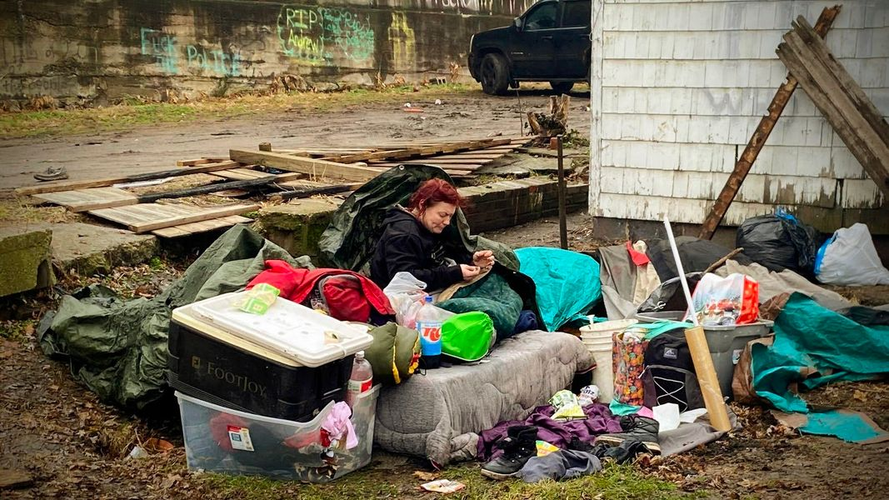

Timeline photos
This woman is sitting in what remains of her home that I destroyed on January 1 2023.
I told her over and over again that she wasn’t allowed to have a tent on our property. I face jail time and fines if I let people put tents on my property.
So I literally tore her home down around her… WHILE SHE WAS IN IT.
“What about my family,” I ask as I destroy these people’s only hope of safety.
“What about me?”
That’s the question that haunts me. It has so many layers. The question I need to be asking is not what happens to me if I help these people. The question that matters is what happens to me if I DON’T help these people.
I guarantee there are Israelis risking everything right now to provide food and water and shelter supplies illegally to their Palestinian neighbors. Maybe the excuse I make is that the Israeli / Palestinian nightmare will be short-lived. That maybe Palestinians are worse off than American homeless people.
Yes, thousands of family members and neighbors dead around you is surely worse. But if it weren’t for a few dissenting activists in America, our homeless neighbors would have no food or water or shelter. That’s the American government’s policy. “Don’t enable them.”
Don’t enable the no good “animals”. Palestinian or American homeless people.
This is the worst side of humanity. That we somehow get to a point in our thinking where the only answer that makes sense in our minds is to stop providing food, water and shelter to fellow human beings. Just smoke them out. Comply or die.
And the “funny” thing is: then I feel the rage and desire to commit genocide on the entire human race. “Maybe it would be better if we all just nuked ourselves out of existence. We are all so basic and mean.”
I end up having desires of exactly what I’m preaching against just a few sentences ago. I turn the whole human race into Palestinians and American homeless people that don’t deserve food, water or shelter. I do it too. I’m just as bad.
Love. Compassion. Forgiveness. All the time. To all the people. That’s the only answer.